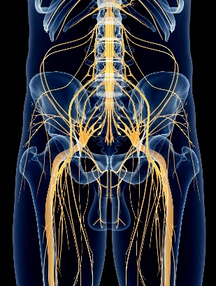

Sciatica occurs when the sciatic nerve is irritated or compressed. The pain typically radiates from the lower back through the buttock down the leg.
In Traditional Chinese Medicine, sciatica is often caused by meridian blockage, invasion of cold or dampness, or weakness of the Kidney or Liver energy.
TCM addresses both the pain and its underlying cause. With acupuncture, tuina and circulation-enhancing techniques, significant and lasting improvements can often be achieved.
Sciatica is often harmless, but certain warning signs (“red flags”) must be medically evaluated.